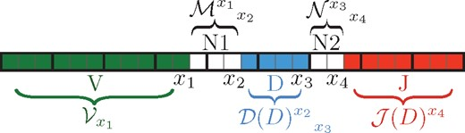

Using OLGA to simulate T-cell receptor sequence diversity to assess genomic assay biases
Use OLGA to simulate T-cell receptor sequence diversity as part of a workflow to understand & correct assay biases between production and in-development assay versions.
T-cell receptor (TCR) proteins are heterodimers, made up of one \(\alpha\) chain (TCRA) and one \(\beta\) chain (TCRB). These sequences each have several hypervariable regions, the most diverse of which is known as the CDR3. In TCRB sequences, the CDR3 is generated by recombination between three genomic sequences, a V-, D-, and J-gene. Up to \(10^{15}\) distinct TCRs could, in principle, be formed by V-D-J recombination; this is an extremely large number (e.g., \(10^{15}\) meters encompasses our entire solar system to the Oort clouds). About \(4\times10^{11}\) TCRs circulate in an adult human, and about \(10^{10}\) of these have unique receptor sequences (Lythe et al. 2016). In meters, \(10^{11}\) meters encompasses about six weeks of Earth’s orbit, and \(10^{10}\)about four days of Earth’s orbit.

A V-, D-, and J- gene recombine to form the CDR3 region of each unique T-cell receptor sequence (“clonotype”).
Adaptive’s immunosequencing platform has several assays to find the sequences of these hypervariable CDR3 regions. However, these assays differ in several important sequencing features, most importantly in the set of multiplexed PCR primers used to amplify the CDR3 region. Primer changes can lead to changes in cross-priming between assay versions, and these changes can cause consistent, recurrent sequence and gene annotation biases between these assay versions. These biases can cause strong false signals in downstream machine learning approaches such as disease modeling unless they are understood and corrected.
To measure and correct assay version-specific biases, I first simulated realistic CDR3 regions of varying lengths, then merged these simulated sequences to assay version-specific V-gene sequences. Fisher’s exact tests on the number of V- & J- gene annotations in each assay were sufficient to reveal any biases between assay versions, after which I could explore workflow changes that reduced these assay biases.
The first step in this process is to simulate the CDR3 regions of the TCR sequences. To do this, I use the python package OLGA, which can generate CDR3 sequences using a generative model of V(D)J recombination.
Installing OLGA
Run pip install olga in your terminal to install OLGA.
Once OLGA is installed it can be run from the command line. The following command generates 500K sequences (-n 5e5) using the default generative model settings for human TCRB sequences (--humanTRB) and saves them in the working directory to a file called simulated_tcrb.tsv (-o simulated_tcrb.tsv).
The default table that OLGA generates has four columns: the CDR3 nucleotide & amino acid sequences, and the V- and J-gene selected in V(D)J recombination to generate this CDR3 sequence.
Some J-genes are much more commonly used in OLGA’s generative model, such as TCRBJ2-7. Many produce a similar range of CDR3 lengths, at least by eye; TCRBJ2-6 seems to create noticeably longer CDR3 on average.
Finally, there is quite a range in the number of CDR3 generated using each V-gene in OLGA’s generative model. V-genes like TCRBV16 are rarely used to make functional CDR3, while V-genes like TCRBV20-1 and TCRBV7-9 are very commonly used to generate CDR3.
References
Lythe, Grant, Robin E. Callard, Rollo L. Hoare, and Carmen Molina-París. 2016. “How Many TCR Clonotypes Does a Body Maintain?”Journal of Theoretical Biology 389 (January): 214–24. https://doi.org/10.1016/j.jtbi.2015.10.016.
Citation
BibTeX citation:
@online{macqueen2024,
author = {MacQueen, Alice},
title = {Using {OLGA} to Simulate {T-cell} Receptor Sequence Diversity
to Assess Genomic Assay Biases},
date = {2024-06-03},
url = {https://alice-macqueen.github.io/posts/2024-06-03-olga/},
langid = {en}
}
![]()